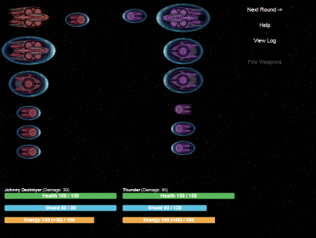
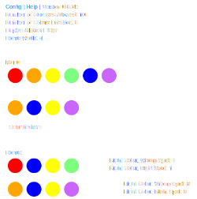

Simplicity - Final Project
Github:
https://github.com/pauldennis2/Simplicity-Webapp
Try it out:
https://simplicity-4x.herokuapp.com/
Description: Simplicity is a
"4X" style strategy game inspired by
Ascendancy, a game I enjoyed a lot as a kid.
Players start with one planet and must expand, colonizing new planets, researching new technologies, and developing
a galactic empire.

Mastermind Web App
Github:
https://github.com/pauldennis2/mastermind-webapp
Try it out:
https://tiy-paul-mastermind.herokuapp.com
Description: Mastermind is a well-known
board game. One
of our class assignments was developing this as a web app. In order to practice my front-end skills I decided to implement
a drag and drop interface, since this is a more intuitive way to play the game. The game includes several configurable
settings. Enjoy!

Ultimate Tic Tac Toe
Github:
https://github.com/pauldennis2/ultimate-tic-tac-toe
(Not a web-app, not hosted on Heroku)
Description: Ultimate Tic Tac Toe (TTT) is a much more complex, somewhat recursive version of regular TTT. The Ultimate board
has nine squares, like regular TTT, each containing its own TTT board. Players have to get three boards in a row to win, and your
opponent's previous move determines your range of possible moves. I developed a heuristic algorithm for a computer to use to play
the game intelligently.